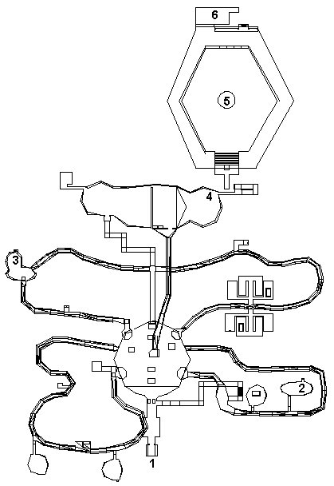

Sweet Water: The Hive

| 1. | Entrance |
| 2. | The switch to open up the central grate |
| 3. | The Key to the reactor room |
| 4. | The Reactor room entrance |
| 5. | The Reactor |
| 6. | The Queen, and the exit |
There are a many demons in the large entry hall. If you can get past them the rest is pretty easy.
Do not destroy the reactor if you don't have Dark containment, once you destroy it the walls fall down and you are warped in front of the queen. You should be able to run past her and into the small hallway. This will make you less of a target for all the others. Kill the Queen and then you can exit.
Note: It has been found that a healer can heal you more than once per day in the hive. This is nice since you cannot cast Lloyd's beacon here and go get healed.
You have saved Enroth. Hope you had fun playing.
Leave us a message mgrounds@hotmail.com